2.2 Representação de números
Os computadores, em geral, usam a base binária para representar os números,
onde as posições, chamadas de bits, assume as condições “verdadeiro” ou
“falso”, ou seja,  ou
ou  . Cada computador tem um número de bits fixo
e, portanto, representa uma quantidade finita de números. Os demais
números são tomados por proximidade àqueles conhecidos, gerando erros de
arredondamento. Por exemplo, em aritmética de computador, o número
. Cada computador tem um número de bits fixo
e, portanto, representa uma quantidade finita de números. Os demais
números são tomados por proximidade àqueles conhecidos, gerando erros de
arredondamento. Por exemplo, em aritmética de computador, o número  tem
representação exata, logo
tem
representação exata, logo  , mas
, mas  não tem representação finita, logo
não tem representação finita, logo
 .
.
Veja isso em Python:
True
>>> np.sqrt(3)**2 == 3
False
2.2.1 Números inteiros
Tipicamente um número inteiro é armazenado num computador como uma sequência de dígitos binários de comprimento fixo denominado registro.
Representação sem sinal
Um registro com  bits da forma
bits da forma
 |
representa o número  .
.
Assim é possível representar números inteiros entre
|
|
Representação com bit de sinal
O bit mais significativo (o primeiro à esquerda) representa o sinal: por convenção,
 significa positivo e
significa positivo e  significa negativo. Um registro com
significa negativo. Um registro com  bits da
forma
bits da
forma
 |
representa o número 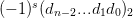. Assim é possível representar números
inteiros entre  e
e  , com duas representações para o zero:
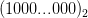 e 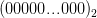.
, com duas representações para o zero:
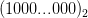 e 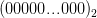.
 bits, teremos os números
bits, teremos os números
Representação complemento de dois
O bit mais significativo (o primeiro à esquerda) representa o coeficiente de
 . Um registro com
. Um registro com  bits da forma:
bits da forma:
|
|
representa o número  .
.
Note que todo registro começando com  será um número negativo.
será um número negativo.
Exemplo 2.2.2. O registro com  bits
bits ![[01000011]](main160x.png) representa o número:
representa o número:
 |
O registro com  bits
bits ![[10111101 ]](main163x.png) representa o número:
representa o número:
 |
Note que podemos obter a representação de  invertendo os dígitos de
invertendo os dígitos de
 em binário e somando 1.
em binário e somando 1.
 bits, teremos os números
bits, teremos os números

2.2.2 Sistema de ponto fixo
O sistema de ponto fixo representa as partes inteira e fracionária do número com uma quantidade fixas de dígitos.
Exemplo 2.2.4. Em um computador de 32 bits que usa o sistema de ponto fixo, o registro
|
|
pode representar o número
 se o sinal for representado por um
dígito. Observe que nesse caso o zero possui duas representações
possíveis:
se o sinal for representado por um
dígito. Observe que nesse caso o zero possui duas representações
possíveis:

e

 se o sinal do
número estiver representado por uma implementação em complemento
de um. Observe que o zero também possui duas representações
possíveis:
se o sinal do
número estiver representado por uma implementação em complemento
de um. Observe que o zero também possui duas representações
possíveis:

e

 se o sinal do número
estiver representado por uma implementação em complemento de dois.
Nesse caso o zero é unicamente representado por
se o sinal do número
estiver representado por uma implementação em complemento de dois.
Nesse caso o zero é unicamente representado por

Observe que  dígitos são usados para representar a parte fracionária,
dígitos são usados para representar a parte fracionária,  são
para representar a parte inteira e um dígito, o
são
para representar a parte inteira e um dígito, o  , está relacionado ao sinal do
número.
, está relacionado ao sinal do
número.
2.2.3 Normalização
Os números 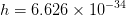 e 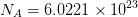 não podem ser armazenados na máquina em ponto fixo do exemplo anterior.
Entretanto, a constante
|
|
pode ser escrita de várias formas diferentes. Para termos uma representação
única definimos como notação normalizada a segunda opção ( ) que
apresenta apenas um dígito diferente de zero a esquerda do ponto decimal
(
) que
apresenta apenas um dígito diferente de zero a esquerda do ponto decimal
( ).
).
Definição 2.2.1. Definimos que

 é o sinal (
é o sinal ( para positivo e
para positivo e  para negativo),
para negativo),
 é o expoente,
é o expoente,
 é a base (por ex.
é a base (por ex.  ,
,  ,
,  ou
ou  ),
),
 é o significando. O significando (também chamado de
mantissa ou coeficiente) contém os dígitos significativos do número.
é o significando. O significando (também chamado de
mantissa ou coeficiente) contém os dígitos significativos do número.


Exemplo 2.2.6. Represente os números  e
e  em um
sistema de ponto fixo de 4 dígitos para a parte inteira e 4 dígitos para a
parte fracionária. Depois represente os mesmos números utilizando notação
normalizada com 7 dígitos significativos.
em um
sistema de ponto fixo de 4 dígitos para a parte inteira e 4 dígitos para a
parte fracionária. Depois represente os mesmos números utilizando notação
normalizada com 7 dígitos significativos.
Solução. As representações dos números  e
e  no sistema
de ponto fixo são
no sistema
de ponto fixo são  e
e  , respectivamente. Em notação
normalizada, as representações são
, respectivamente. Em notação
normalizada, as representações são  e
e  ,
respectivamente.
,
respectivamente.

2.2.4 Sistema de ponto flutuante
O sistema de ponto flutuante não possui quantidade fixa de dígitos para as partes inteira e fracionária do número.
Podemos definir uma máquina  em ponto flutuante de dois modos:
em ponto flutuante de dois modos:

 é a base (em geral
é a base (em geral  ou
ou  ),
),
 é o número de dígitos da mantissa,
é o número de dígitos da mantissa,
 é o número de dígitos do expoente,
é o número de dígitos do expoente,
 é um valor de deslocamento do expoente (veja a seguir),
é um valor de deslocamento do expoente (veja a seguir),
 é o menor expoente,
é o menor expoente,
 é o maior expoente.
é o maior expoente.
Considere uma máquina com um registro de  bits e base
bits e base  . Pelo
padrão IEEE754,
. Pelo
padrão IEEE754,  bit é usado para o sinal,
bit é usado para o sinal,  bits para o expoente e
bits para o expoente e  bits
são usados para o significando tal que
bits
são usados para o significando tal que
 |
represente o número (o  por definição)
por definição)


Em base  não é necessário armazenar o primeiro dígito (por quê?).
não é necessário armazenar o primeiro dígito (por quê?).
Por exemplo, o registro
![[0|100 0000 0000|1010 0000 0000...0000 0000]](main231x.png)

O expoente deslocado
Uma maneira de representar os expoentes inteiros é deslocar todos eles uma mesma quantidade. Desta forma permitimos a representação de números negativos e a ordem deles continua crescente. O expoente é representado por um inteiro sem sinal do qual é deslocado o BIAS.
Tendo  dígitos para representar o expoente, geralmente o
dígitos para representar o expoente, geralmente o  é
predefinido de tal forma a dividir a tabela ao meio de tal forma que o expoente
um seja representado pelo sequência
é
predefinido de tal forma a dividir a tabela ao meio de tal forma que o expoente
um seja representado pelo sequência ![[100...000]](main235x.png) .
.
Exemplo 2.2.7. Com  bits, pelo padrão
bits, pelo padrão  , temos que
, temos que
 . Assim
. Assim  . Como queremos que esta
sequência represente o
. Como queremos que esta
sequência represente o  , definimos
, definimos  , pois
, pois

Com  bits, temos
bits, temos  e
e  . E com
. E com  bits, temos
bits, temos
 e
e  .
.
Com  bits temos
bits temos
![[111 1111 1111 ] = reservado
[111 1111 1110 ] = 2046 − BIAS = 1023 = E
10 MAX
... =
[100 0000 0001 ] = 210 + 1 − BIAS = 210
[100 0000 0000 ] = 210 − BIAS = 1
10
[011 1111 1111 ] = 1023 − BIAS = 010
[011 1111 1110 ] = 1022 − BIAS = − 110
... =
[000 0000 0001 ] = 1 − BIAS = − 1022 = EMIN
[000 0000 0000 ] = reservado](main250x.png) |
O maior expoente é dado por 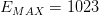 e o menor expoente é dado por 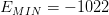.
O menor número representável positivo é dado pelo registro
![[0|000 0000 0001|0000 0000 0000...0000 0000]](main253x.png)
 ,
,  e 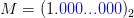, ou seja,
e 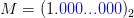, ou seja,

O maior número representável é dado por
![[0|111 1111 1110|1111 1111 ...1111 1111]](main258x.png)
 ,
,  e 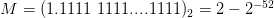, ou
seja,
e 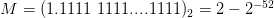, ou
seja,

Casos especiais
O zero é um caso especial representado pelo registro
![[0|000 0000 0000|0000 0000 0000...0000 0000]](main263x.png)
Os expoentes reservados são usados para casos especiais:
![c = [0000...0000]](main264x.png) é usado para representar o zero (se
é usado para representar o zero (se  ) e os
números subnormais (se
) e os
números subnormais (se  ).
).
![c = [1111...1111]](main267x.png) é usado para representar o infinito (se
é usado para representar o infinito (se  ) e
NaN (se
) e
NaN (se  ).
).
Os números subnormais3 tem a forma

Para mais informações sobre aritmética de ponto flutuante em Python, veja a documentação.
2.2.5 A precisão e o epsilon de máquina
A precisão  de uma máquina é o número de dígitos significativos usado para
representar um número. Note que
de uma máquina é o número de dígitos significativos usado para
representar um número. Note que  em binário e
em binário e  para
outras bases.
para
outras bases.
O epsilon de máquina,  , é definido de forma que
, é definido de forma que  seja o
menor número representável maior que
seja o
menor número representável maior que  , isto é,
, isto é,  é representável, mas não
existem números representáveis em
é representável, mas não
existem números representáveis em  .
.
 bits, temos que o epsilon será dado por
bits, temos que o epsilon será dado por

 .
.
2.2.6 A distribuição dos números
Utilizando uma máquina em ponto flutuante temos um número finito de números que podemos representar.
Um número muito pequeno geralmente é aproximado por zero (underflow) e um número muito grande (overflow) geralmente faz o cálculo parar. Além disso, os números não estão uniformemente espaçados no eixo real. Números pequenos estão bem próximos enquanto que números com expoentes grandes estão bem distantes.
Se tentarmos armazenar um número que não é representável, devemos utilizar o número mais próximo, gerando os erros de arredondamento.
Por simplicidade, a partir daqui nós adotaremos  .
.
Exercícios
* As versões do livro disponíveis no site podem estar desatualizadas, veja a versão PDF atual no repositório GitHub oficial do projeto.
- IME - UFRGS